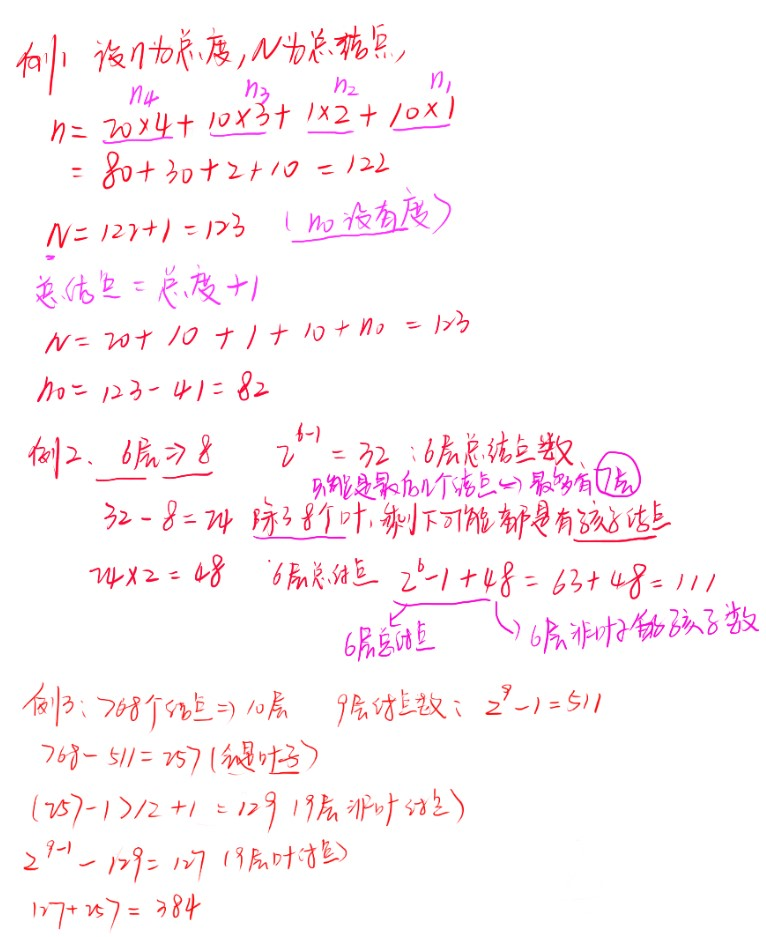

二叉树的性质
- 性质一：在二叉树的第$i$层上至多有$2^{i-1}$个结点$(i\geq1)$
- 性质二：深度为$k$的二叉树至多有$2^k-1$个结点$(k\geq1)$
- 性质三：对任何一棵二叉树$T$，如果其结点数为$n_0$，度为2的结点数为${n_2}$，则$n_0=n_2+1$
- 性质四：具有$n$个结点的完全二叉树的深度为$\left \lfloor Log_2n \right \rfloor+1$
- 性质五：如果对一棵有$n$个结点的完全二叉树的（其深度为$\left \lfloor Log_2n \right \rfloor+1$）的结点按层序编号（从第1层到第$\left \lfloor Log_2n \right \rfloor+1$，每层从左到右），则对任一结点$i(1\leq i\leq n)$，有
- 如果$如果i=1$，则结点$i$是二叉树的根，无双亲；如果$i>1$，则其双亲$PARENT(i)$是结点$\left \lfloor i/2 \right \rfloor$
- 如果$2i>n$，则结点$i$无左孩子（结点$i$为叶子结点）；否则其左孩子$LCHILD(i)$是结点$2i$。
- 如果$2i+1>n$，则结点$i$无右孩子；否则其右孩子$RCHILD(i)$是结点$2i+1$
三道例题
1. 在一棵度为4的树T中，若有20个度为4的结点，10个度为3的结点，1个度为2的结点，10个度为1的结点，则树T的叶结点个数为？（2010年真题）
A 41 !B 82 C 113 D 122
2. 已知一棵完全二叉树的第6层（根为第1层）有8个叶结点，则该完全二叉树的结点个数最多为？( ) (2009年真题）
A 39 B 52 !C 111 D 119
3. 若一棵完全二叉树有768个结点，则该二叉树中叶子结点的个数为（）： (2011年真题）
A 257 B 258 C 384 D 385
森林与二叉树的转换
森林转换称二叉树
如果$F=(T_1,T_2,…,T_m)$是森林，则可按如下规则转换成一棵二叉树$B=(root,LB,RB)$。
（1）若$F$为空，则$m=0$，则$B$为空树；
（2）若$F$非空，即$m\ne0$，则$B$的根$root$即为森林中第一棵树的根$ROOT(T_1)$；$B$的左子树LB是从$T_1$中根结点的子树森林$F_1={T_{11},T_{12},…,T_{1m}}$二叉树转换成森林
如果$B=(root,LB,RB)$是一棵二叉树，则可按如下规则转换成森林$F={T_1,T_2,…,T_m}$;
(1)若$B$为空，则$F$为空；
(2)若$B$非空，则$F$中的第一颗树$T_1$的根$ROOT(T_1)$即为二叉树$B$的根$root$是，$T_1$中根节点的子树$F_1$是由$B$的左子树$LB$转换而成的森林；$F$中除了$T_1$之外其余树组成的森林$F^{‘}={T_2,T_3,…,T_m}$是由B的右子树$RB$转换而成的森林
树的概念[附]
树结构是一类重要的非线性结构。树型结构是结点之间有分支，并且具有层次关系的结构。
树是n(n>=0)个结点的有限集，它或为空树n=0;或为非空树：
（1）有且仅有一个称之为根的结点；
（2）除根结点以外的其余结点可分为m（m>0）个互不相交的有限集$T_1,T_2,T_3,…,T_m$，其中每一个集合又是一棵树，并且称为子树(SubTree)
树/二叉树的数据结构
typedef struct BiTNode{
TElemType data; // 结点数据域
struct BiTNode *lchild,*rchild; // 左右孩子指针
}BiTNode,*BiTree;二叉树的遍历
- 前序遍历
- 中序遍历
- 后续遍历
void InOrderTraverse(BiTree T){
// 中序遍历二叉树T的递归算法
if(T){ // 若二叉树非空
InOrderTraverse(T->lchild); // 中序遍历左子树
printf("%c ",T->data); // 访问根结点
InOrderTraverse(T->rchild); // 中序遍历右子树
}
}
void PreOrderTraverse(BiTree T){
// 前序遍历二叉树T的递归算法
if(T){ // 若二叉树非空
printf("%c ",T->data); // 访问根结点
PreOrderTraverse(T->lchild); // 前序遍历左子树
PreOrderTraverse(T->rchild); // 前序序遍历右子树
}
}
void PostOrderTraverse(BiTree T){
// 后续遍历二叉树T的递归算法
if(T){ // 若二叉树非空
PostOrderTraverse(T->lchild); // 后续遍历左子树
PostOrderTraverse(T->rchild); // 后续遍历右子树
printf("%c ",T->data); // 访问根结点
}
}二叉树的深度
int Depth(BiTree T){
// 计算二叉树的T的深度
if(T==NULL)
return 0;
else{
int m=Depth(T->lchild);
int n=Depth(T->rchild);
return (m>n)?(m+1):(n+1);
}
}二叉树结点数量
int NodeCount(BiTree T){
// 统计二叉树T中结点的个数
if(T==NULL)
return 0; // 如果是空树，则结点个数为0，递归结束
else
return NodeCount(T->lchild)+NodeCount(T->rchild)+1;
}二叉树非递归算法
void InOrderTraverse_rc(BiTree T){
// 中序遍历二叉树T的非递归算法
SqStack S;
InitStack(S);
BiTree p=T,q=(BiTree)malloc(sizeof(BiTNode));
while(p||!StackEmpty(S)){
if(p){ // p为空
Push(S,p);
p=p->lchild;
}else{
Pop(S,q); // 退栈
printf("%c ",q->data); // 访问根结点
p=q->rchild; // 遍历右子树
}
}
}复制二叉树
void Copy(BiTree T,BiTree &NewT){
// 复制一颗和T完全相同的二叉树
if(T==NULL){ // 如果是空树，递归结束
NewT=NULL;
return;
}else{
NewT=(BiTree)malloc(sizeof(BiTNode));
NewT->data=T->data; // 复制根结点
Copy(T->lchild,NewT->lchild); // 递归复制左子树
Copy(T->rchild,NewT->rchild); // 递归复制右子树
} // else
} 在遍历二叉树的时候遇到的问题
- 中序遍历二叉树T的非递归算法中用到了栈，栈如何定义？
- 写
Copy方法的时候，出现了Program received signal SIGSEGV, Segmentation fault错误。 - 第一个出现问题的解决办法代码
int InitStack(SqStack &S){
// 创建一个空栈
S.base=(BiTree*)malloc(sizeof(BiTree)*MAXSIZE);
// BiTree 是一个指针，要建立一个存放指针的数组
// (指针的指针)malloc(sizeof(指针)*MAXSIZE);
if(!S.base)
return -1;
S.top=S.base;
S.stacksize=MAXSIZE;
return 1;
} 也就是说需要动态分配一个存放指针的数组，而指向这个数组也是一个指针
所以是
(指针的指针)malloc(sizeof(指针)*MAXSIZE);- 第二个出现问题的解决办法
Program received signal SIGSEGV, Segmentation fault这句话翻译过来是程序接受了一个SIGSEGV的标志，分割失败，说白了就是某个地方的值越界了，后来仔细看看原来是if(T=NULL)少了一个等号
void Copy(BiTree T,BiTree &NewT){
// 复制一颗和T完全相同的二叉树
if(T=NULL){ // 少了一个等号
NewT=NULL;
return;
}else{
NewT=(BiTree)malloc(sizeof(BiTNode));
NewT->data=T->data; // 复制根结点
Copy(T->lchild,NewT->lchild); // 递归复制左子树
Copy(T->rchild,NewT->rchild); // 递归复制右子树
} // else
}完整代码贴出
#include<stdio.h>
#include<stdlib.h>
#define MAXSIZE 100
// - - - - 二叉树的二叉链表存储表示 - - - -
typedef char TElemType;
typedef struct BiTNode{
TElemType data; // 结点数据域
struct BiTNode *lchild,*rchild; // 左右孩子指针
}BiTNode,*BiTree;
typedef struct{
BiTree *base; // 栈底指针
BiTree *top; // 栈顶指针
int stacksize; // 栈可用的最大容量
}SqStack;
int InitStack(SqStack &S){
// 创建一个空栈
S.base=(BiTree*)malloc(sizeof(BiTree)*MAXSIZE);
// BiTree 是一个指针，要建立一个存放指针的数组
// (指针的指针)malloc(sizeof(指针)*MAXSIZE);
if(!S.base)
return -1;
S.top=S.base;
S.stacksize=MAXSIZE;
return 1;
}
int Push(SqStack &S,BiTree bt){
if(S.top-S.base==S.stacksize)
return 0;
*S.top++=bt;
return 1;
}
int Pop(SqStack &S,BiTree &bt){
// 删除S的栈顶元素，用e返回其值
if(S.top==S.base)
return 0;
bt=*--S.top;
return 1;
}
int StackEmpty(SqStack S){
if(S.top==S.base)
return 1;
return 0;
}
/* ①扫描字符序列，读入字符ch
* ②如果ch是一个"#"字符，则表明该二叉树为空树，即T为NULL；否则执行以下操作
* # 申请一个结点空间T
* # 将ch赋给T->data
* # 递归创建T的左子树
* # 递归创建T的右子树
*/
void CreateBiTree(BiTree &T){
// 按先后次序输入二叉树中结点的值（一个字符），创建二叉链表表示二叉树T
char ch;
scanf("%c",&ch);
if(ch=='#')
T=NULL;
else{
T=(BiTree)malloc(sizeof(BiTNode)); // 生成根节点
T->data=ch; // 根结点数据域置为ch
CreateBiTree(T->lchild); // 递归创建左子树
CreateBiTree(T->rchild); // 递归创建右子树
}
}
void InOrderTraverse(BiTree T){
// 中序遍历二叉树T的递归算法
if(T){ // 若二叉树非空
InOrderTraverse(T->lchild); // 中序遍历左子树
printf("%c ",T->data); // 访问根结点
InOrderTraverse(T->rchild); // 中序遍历右子树
}
}
void PreOrderTraverse(BiTree T){
// 前序遍历二叉树T的递归算法
if(T){ // 若二叉树非空
printf("%c ",T->data); // 访问根结点
PreOrderTraverse(T->lchild); // 前序遍历左子树
PreOrderTraverse(T->rchild); // 前序序遍历右子树
}
}
void PostOrderTraverse(BiTree T){
// 后续遍历二叉树T的递归算法
if(T){ // 若二叉树非空
PostOrderTraverse(T->lchild); // 后续遍历左子树
PostOrderTraverse(T->rchild); // 后续遍历右子树
printf("%c ",T->data); // 访问根结点
}
}
/*
* 如果是空树，递归结束，深度为0，否则执行以下操作：
* # 递归计算左子树的深度记为m
* # 递归计算右子树的深度记为n
* # 如果m大于n，二叉树的深度为m+1，否则为n+1
*/
int Depth(BiTree T){
// 计算二叉树的T的深度
if(T==NULL)
return 0;
else{
int m=Depth(T->lchild);
int n=Depth(T->rchild);
return (m>n)?(m+1):(n+1);
}
}
int NodeCount(BiTree T){
// 统计二叉树T中结点的个数
if(T==NULL)
return 0; // 如果是空树，则结点个数为0，递归结束
else
return NodeCount(T->lchild)+NodeCount(T->rchild)+1;
}
void InOrderTraverse_rc(BiTree T){
// 中序遍历二叉树T的非递归算法
SqStack S;
InitStack(S);
BiTree p=T,q=(BiTree)malloc(sizeof(BiTNode));
while(p||!StackEmpty(S)){
if(p){ // p非空
Push(S,p);
p=p->lchild;
}else{
Pop(S,q); // 退栈
printf("%c ",q->data); // 访问根结点
p=q->rchild; // 遍历右子树
}
}
}
// 如果是空树，递归结束，否则执行以下操作
// # 申请一个新结点空间，复制根结点；
// # 递归复制左子树。
// # 递归复制右子树。
void Copy(BiTree T,BiTree &NewT){
// 复制一颗和T完全相同的二叉树
if(T==NULL){ // 如果是空树，递归结束
NewT=NULL;
return;
}else{
NewT=(BiTree)malloc(sizeof(BiTNode));
// printf("%c %c",NewT->data,T->data);
NewT->data=T->data; // 复制根结点
Copy(T->lchild,NewT->lchild); // 递归复制左子树
Copy(T->rchild,NewT->rchild); // 递归复制右子树
} // else
}
// ABC##DE#G##F### 树的输入数据（通过递归）
int main(){
BiTree bt,newBt;
CreateBiTree(bt);
printf("后序遍历的结果是：");
InOrderTraverse_rc(bt);
printf("\n树的深度为：%d",Depth(bt));
printf("\n树的结点个数为：%d",NodeCount(bt));
// --------------------
Copy(bt,newBt);
InOrderTraverse_rc(newBt);
}